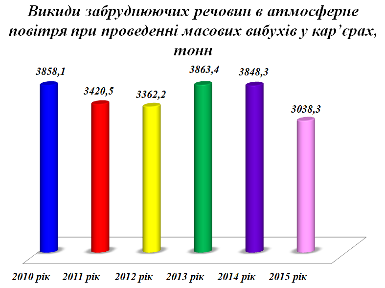
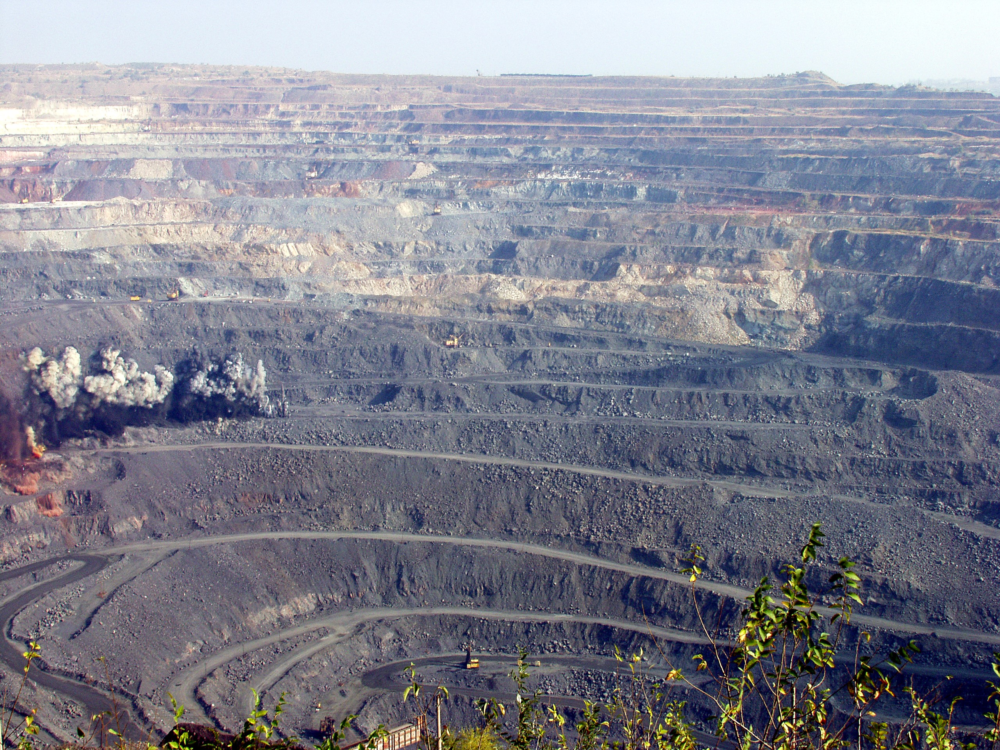

Основними засадами державної екологічної політики України на період до 2020 року передбачено зменшення обсягу викидів забруднюючих речовин стаціонарними джерелами до 2015 року на 10% та до 2020 року на 25% від базового рівня 2010 року, що є одним із ключових завдань в досягненні її стратегічних цілей.
За даними Головного управління статистики у Дніпропетровській області за 2015 рік у загальному обсязі викидів забруднюючих речовин у атмосферне повітря по Дніпропетровській області (723,9 тис. тонн) викиди в повітря по місту Кривий Ріг склали 45% (327,032 тис. тонн).
Щільність викидів забруднюючих речовин у атмосферне повітря на 1км2 площі міста в 2015 році становила 803,5 тонн, що на 167,1 тонн (17%) менше, ніж у 2010 році. Обсяги викидів у розрахунку на одну особу – 506,9 кг, що на 82,2 кг (14%) менше, ніж у 2010 році.
Основними забруднюючими речовинами атмосферного повітря міста, які складають майже 96% від загального обсягу викидів забруднюючих речовин є оксид вуглецю – 73%, пил – 15%, діоксид азоту – 5%, діоксид сірки – 3%; інші речовини – 4% (сірководень, аміак, фенол, формальдегід, діазоту оксид, метан).
Основний вплив на стан атмосферного повітря здійснює ПАТ "АрселорМіттал Кривий Ріг". У 2015 році обсяги викидів забруднюю¬чих речовин у атмосферне повітря від стаціонарних джерел викидів підприємства становили 82% від загального обсягу викидів забруднюючих речовин по місту.
Окремо слід виділити викиди у атмосферне повітря парникових газів, до яких відноситься вуглекислий газ, метан, діазоту оксид. Парникові гази суттєво впливають на стан довкілля. Їх викиди призводять до глобального потепління та змін клімату. Основним компонентом впливу на зміну клімату є вуглекислий газ, частка якого серед викидів парникових газів є найбільшою та становить 99,9% від загального обсягу викидів парникових газів. У 2015 році обсяг викидів вуглекислого газу зменшено на 2,5% у порівнянні з 2011 роком.
На території міста розташовано 8 діючих кар’єрів, в яких проводиться понад 200 масових вибухів за рік.
Суб’єктом державного моніторингу по спостереженню за забрудненням атмосферного повітря у нашому місті є Лабораторія спостережень за станом атмосферного повітря Дніпропетровського регіонального центру з гідрометеорології. Контроль здійснюється на 5 стаціонарних постах, що розташовані за адресами: вул. Каховська та вул. Степана Тільги (Металургійний район); пл. Визволення (Центрально-Міський район); вул. Груні Романової (Інгулецький район); вул. Героїв АТО (Довгинцівський район) за дев’ятьма забруднюючими речовинами, а саме: діоксиду сірки, оксиду вуглецю, діоксиду азоту, оксид азоту, сірководню, фенолу, аміаку, формальдегіду та пилу.